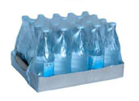
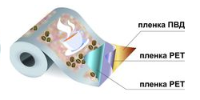

-
К данной категории товаров можно отнести: стиральный порошок, порошковые чистящие и моющие средства и пр. ПЭ (белая, окрашенная) с поверхностной печатью Для упаковки товара данной категории широкое распространение получили ПВД пленки с поверхностной печатью. Данный материал обладает необходимой эластичностью, стойкостью на прокол, отличной свариваемостью в пылящей среде. Для обеспечения привлекательности внешнего вида гибкой упаковки возможно нанесение качественной 10-ти цветной печати. Также однослойный материал представляет собой хорошее сочетание «цена -качество».
-
 Очень часто для упаковки почвы, грунтов используются мешки (пакеты) с их последующей запайкой после засыпки продукции. В таких случаях идеальным является применение мешков с использованием ПЭ пленки (прозрачная, белая, белая с черным подслоем) высокой прочности и стойкостью к проколу и раздиру. Это особенно важно при фасовке продукта большого веса. Такие пленки имеют высокие физико-механические показатели и обеспечивают сохранность продукции в процессе транспортировки и реализации. Сварочные свойства материала позволяют осуществлять сварку в «пылящей» среде обеспечивая высокие сварные свойства швов.
Очень часто для упаковки почвы, грунтов используются мешки (пакеты) с их последующей запайкой после засыпки продукции. В таких случаях идеальным является применение мешков с использованием ПЭ пленки (прозрачная, белая, белая с черным подслоем) высокой прочности и стойкостью к проколу и раздиру. Это особенно важно при фасовке продукта большого веса. Такие пленки имеют высокие физико-механические показатели и обеспечивают сохранность продукции в процессе транспортировки и реализации. Сварочные свойства материала позволяют осуществлять сварку в «пылящей» среде обеспечивая высокие сварные свойства швов.
-
 Групповая упаковка из термоусадочной пленки может применяться практически для любых товаров. При использовании прозрачных термоусадочных пленок упакованный продукт хорошо виден и не требует дополнительной рекламы. Однако если используется плотная пленка, прочитать название и состав продукта на этикетке бывает не всегда легко. Поэтому на пленку стали наносить флексопечать. Ярко оформленную групповую упаковку легко можно заметить на полках магазинов.Нанесение печати возможно на любые термоусадочные пленки. Степень усадки пленки должна быть учтена на стадии изготовления макета. Только при соблюдении данного условия возможно изготовление точного изображения.
-
 Замороженная продукция представлена большим ассортиментом изделий разной степени готовности: мясо и изделия из мяса, полуфабрикаты из курицы и мяса птицы, морепродукты, овощи и смеси из овощей, картофель фри, грибы, ягоды, фрукты, пицца, пельмени, тесто, блинчики.
Для упаковки данной продукции применяются пленки из полиэтилена и полипропилена. Данная упаковка для продуктов глубокой заморозки обладает высокой морозостойкостью материалов и их сварных швов, не становится хрупкой при минусовых температурах, дает возможность надежно защищать продукцию от различных воздействий внешних факторов.
Замороженная продукция представлена большим ассортиментом изделий разной степени готовности: мясо и изделия из мяса, полуфабрикаты из курицы и мяса птицы, морепродукты, овощи и смеси из овощей, картофель фри, грибы, ягоды, фрукты, пицца, пельмени, тесто, блинчики.
Для упаковки данной продукции применяются пленки из полиэтилена и полипропилена. Данная упаковка для продуктов глубокой заморозки обладает высокой морозостойкостью материалов и их сварных швов, не становится хрупкой при минусовых температурах, дает возможность надежно защищать продукцию от различных воздействий внешних факторов.
-
Для упаковки молока и молочных продуктов применяют как однослойные так и многослойные пленки с наличием в структуре материала черного слоя. Толщина таких пленок – 70–90 мкм. В многослойных пленках каждый из слоев имеет свое назначение и содержит специальные добавки. Высокая стойкость к проколу, отличные сварочные свойства и идеальное скольжение по фасовочной линии обеспечивают высокие скорости упаковки и исключают протечки готового продукта. Данный вид упаковки обладает ценовым преимуществом перед другими видами упаковки (Tetra Pack, ПЭТ тарой), обеспечивая при этом идеальную сохранность продукта в течение срока годности.
-
К данному сегменту относятся: чипсы, сухарики, орехи, сухофрукты, семечки, кукурузные палочки, колечки, рыба вяленая, кальмары сухие, крекер, попкорн, соломка, мюсли, сухие завтраки, хлопья и другие. Характерная особенность группы снеков – низкое содержание влаги, высокая жирность, высокая восприимчивость к посторонним запахам. Упаковочные материалы для таких продуктов должны обладать высокими барьерными свойствами (прекрасно задерживать свет и иметь повышенный барьер по кислороду и парам воды, удерживать жиры в упаковке, не давая им мигрировать наружу), поэтому, как правило, применяются ламинированные структуры, состоящие из двух и более слоев пленок.
-
К данному сегменту относится такая продукция, как макаронные изделия, крупа, сахар, сахарная пудра, кокосовая стружка, крахмал, мак, сухари панировочные, мука, пряности, горчичный порошок, горох, приправы и другие. Для фасовки продуктов применяют, как правило, упаковку Flow-pack. Многие продукты данной группы имеют длительные сроки хранения, что выдвигает высокие требования к свойствам упаковки для сахара, обеспечивающим сохранность товара в течение всего срока годности. Одно из основных предъявляемых к данной упаковке требований - высокая устойчивость к проколу.
-
 К данной категории товаров можно отнести чай, кофе, сухие растворимые напитки, а также картофельное пюре, молоко и сливки сухие, блинчики, оладьи, корма для животных, вермишель быстрого приготовления, каши быстрого приготовления, супы и другие. Сухие напитки характеризует очень низкое содержание влаги, поэтому герметичность упаковки и низкая влагопроницаемость играют особенно важную роль. Кроме того, для таких продуктов, как кофе, который обладает ярко выраженным собственным ароматом, стойкость упаковки к проникновению посторонних запахов извне также является важнейшим свойством. Упаковка для данной группы должна иметь высокие прочностные характеристики, обладать высокими барьерными свойствами по газо-, светонепроницаемости.

| Преимущества | Почему мы | О нас |
| Оптимальные сроки заказов Высокие стандарты качества Модернизация технологий производства |
Нас рекомендуют клиенты Мы держим слово С нами выгодно |
Высокое качество продукции Стабильный курс развития На рынке более 7 лет |